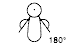

This maneuver focuses on passive flexor tone of the biceps muscle by
measuring the angle of recoil following very brief extension of the upper
extremity.
With the infant lying supine, the examiner places one hand beneath the
infant's elbow for support. Taking the infant's hand, the examiner briefly
sets the elbow in flexion, then momentarily extends the arm before releasing
the hand. The angle of recoil to which the forearm springs back into flexion
is noted, and the appropriate square is selected on the score sheet. The
extremely pre-term infant will not exhibit any arm recoil. Square #4 is
selected only if there is contact between the infant's fist and face. This
is seen in term and post term infants.
Care must be taken not to hold the arm in the extended position for a
prolonged period, as this causes flexor fatigue and results in a falsely low
score due to poor flexor recoil.
| SIGN | NEURO-MUSCULAR MATURITY SCORE | SIGN SCORE | ||||||
| -1 | 0 | 1 | 2 | 3 | 4 | 5 | ||
| Arm Recoil |  |
 |
 |
 |
 |
|||